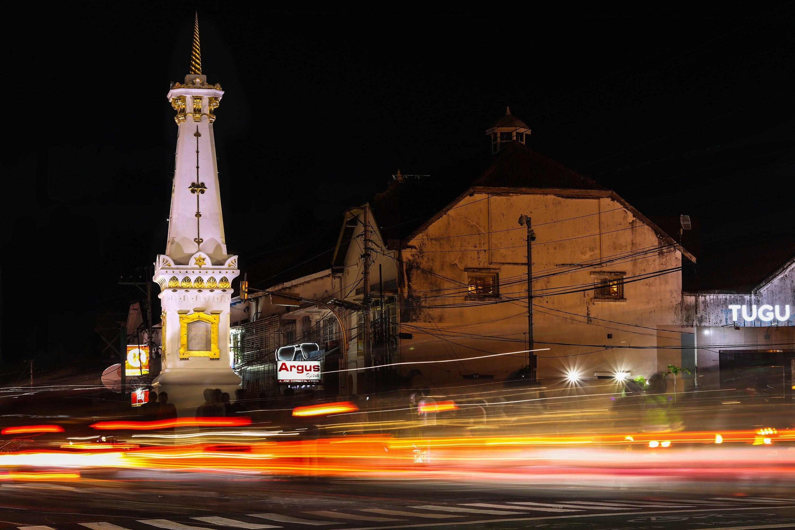

Explore Yogyakarta

Yogyakarta, often referred to as Jogja, is a cultural heartland of Indonesia renowned for its preservation of traditional Javanese arts and heritage. The city offers a serene and historic atmosphere with ancient temples, royal palaces, and vibrant local crafts. It is also a gateway to the world-famous Borobudur and Prambanan temples.
- Popular Attractions: Borobudur Temple, Prambanan Temple, Malioboro Street
- Best Time to Visit: May to September
- Local Cuisine: Gudeg, Bakpia, Sate Klathak